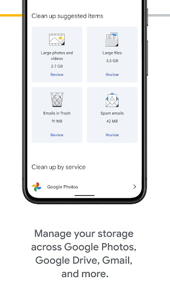

旧 Pixel 屏幕碎了那天，我才庆幸自己开过 Google One
一个上班族的换机亲历：旧手机摔得黑屏，打开新手机的那一刻，Google One 默默把我两年的数据全部接了回来。从备份设置到恢复完成，聊聊这场 20 分钟的"数据逃难"。
上周二早上，我在地铁上掏耳机，Pixel 8 从口袋滑出去，正面拍在站台地砖上——屏幕中央蛛网裂纹蔓延开来，还能亮，但触控已经完全失灵。
我蹲在地上盯着那片碎玻璃的时候，脑子里飞速转的不是心疼手机，而是另一件事：我这两年的东西，还在吗？
照片、微信聊天记录、工作文档备份、女儿幼儿园的视频、甚至连上次换的那套壁纸……脑子里闪过的不是"这手机值多少钱"，而是无数个"我是不是没备份过"的念头。
那个被我忽略了半年的开关
回到公司用电脑订了台 Pixel 9，等快递的间隙我才想起来，其实半年前去Google One 官网开了 200GB 存储计划——当时是为了把 Google Photos 的免费额度扩上去，顺手在系统设置里点了个"使用 Google One 备份设备"，然后就再也没管过它。
我打开 Google One App（没装的话从官方下载拿一个），屏幕上显示的最后一次备份时间是 昨天晚上 11:47。
就是说，我每天睡前插上充电器、连上 Wi-Fi 的那一小时里，Google 在默默把我的手机打包。照片、视频、应用数据、通讯录、短信、通话记录、Wi-Fi 密码、甚至连主屏幕的图标排列和壁纸——全部同步到了云端。
我愣了一下。原来那个我以为"没啥用"的开关，一直在后台安静地帮我扛着风险。
新手机开箱：20 分钟回到昨天
新手机到的时候已经是下班了。我坐在出租车后座，拆封、贴膜、开机，跟着 Android 的设置向导一步步走。
语言、地区、Wi-Fi，然后是登录 Google 账号——输入密码的那一刻，我心跳莫名加速，像是在查一场考试成绩。
登录成功后，系统跳出了三个选项：
- 从旧设备恢复（点对点连线）
- 从云端备份恢复 ← 我点了这个
- 设为新设备
系统列出了我名下所有可用的设备备份，最近一条就是昨天的那个，5.2GB。勾上"应用和应用数据"、"通讯录"、"短信和通话记录"、"照片和视频"、"Wi-Fi 密码"、"系统设置"——默认全部勾选，我没改。
然后就是等。

说实话，我以为恢复会很慢——5GB 多的数据，怎么着也得一两个小时吧？结果我在出租车里刷了几页微博，大概 20 分钟的样子，新手机的主屏幕就亮了。
壁纸一模一样。图标排列一模一样。我甚至都没发现"恢复什么时候结束了"——它就是悄悄完成的。
解锁进去，打开 Google Photos：两年前在青海湖拍的那组照片，在。打开通讯录：所有联系人一个不缺，甚至包括那个半年没联系的装修师傅。打开微信：最近的聊天记录都在，往上翻也能翻到上周。
最让我惊讶的是游戏进度——一款我玩了大半年的经营类游戏，打开之后直接进入了我上次退出的那座城市，金币、建筑、等级，一分没少。我后来才知道，那是因为那款游戏接了 Android 备份 API，Google One 在备份的时候一并把它的存档打包了。
那些我以为"应该在"但其实不包含的东西
恢复完之后我特意翻了一下备份的详细清单——不是所有东西都在，有些是真的不会被自动备份的。
比如保存在 SIM 卡上的联系人，Google One 只读手机存储里的，所以 SIM 卡上的那几个老号码我得手动导出 VCF 再导入。比如银行 App 的数据，出于安全原因不允许备份，新手机上登进去得重新绑定银行卡。还有 Google Pay 的支付设置，也得重新绑。
这些不算坑，但如果你有东西丢了，大概率不是 Google One 的问题——是那款 App 没接入 Android 备份 API。Google One 只是负责"搬"，但搬不搬得动，App 自己说了算。

事后复盘：备份这事儿最容易被忽略的细节
后来我打开 Google One App 的管理备份页面，又去google one 文档翻了一下，发现了几件之前没注意的事：
首次完整备份最长可能需要 24 小时，但之后的日常增量备份会快很多——通常在你睡觉、充电、连 Wi-Fi 的时候自动进行，你完全感知不到。备份是后台静默跑的，你正常用手机它也在工作。
还有一个容易忽略的时间窗口：Google 只保留最近 57 天的备份。也就是说，如果你超过两个月没开自动备份、又没手动触发过，再想恢复就来不及了。
我那次能救回来，纯粹是因为半年前顺手开了自动备份，然后手机基本每天晚上都在充电连 Wi-Fi。没有任何刻意操作，就是一个"开了就不管"的状态。
那些存储额度怎么用才最划算
说到 Google One，它不只是备份。我当时选了 200GB 档，Google Photos 原画质存储无压力，Google Drive 和 Gmail 也共享这 200GB 的空间。后来才知道不同档位的差异挺大的——免费用户只有基础额度，AI Plus 档起还能免费用 Google Flow 创意模型（文本生图、音乐生成），AI Ultra 档甚至支持图片生成视频。
如果你已经订阅了 Google One 的 AI Plus 或 AI Pro 档，Google Flow 相当于白送的创意 AI 能力，不用再额外付费去买 Midjourney 之类的服务——这点我也是翻了文档才发现的，之前完全没意识到自己账号里还藏着这个。
写在最后
这次换机折腾下来，我最大的感受是：备份这件事，只有在出事的那天才会被想起。平时谁会特意去检查"我的备份在不在"？都是等手机摔了、丢了、变砖了，才拍大腿。
但 Google One 的自动备份设计，就是在解决这个问题——你只需要在系统设置里点一次开关，之后它就安安静静地在后台帮你守着。不需要你定期手动插电脑拷文件，不需要你记得每月去云盘同步，甚至不需要你知道它在工作。
如果你现在手里拿着一台 Android 手机，花 30 秒去设置里找一下「Google → 备份」，把"使用 Google One 备份设备"打开——这可能是你今天做的最划算的一件事。毕竟下一次你不知道会在什么地方、什么时候、以什么方式摔掉你的手机。
另外，这套关于 Google One 的中文资料我分别同步到了GitHub、Gitee和GitCode，不管是备份设置的详细步骤、各档位的额度对比，还是换机恢复的常见问题，都覆盖到了——有时候翻翻这些才发现，自己正在用的功能背后还有好多没解锁的玩法。